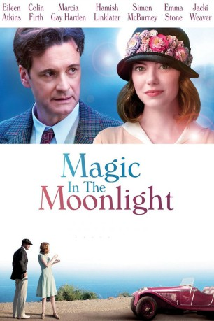
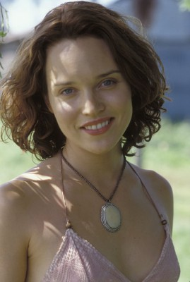
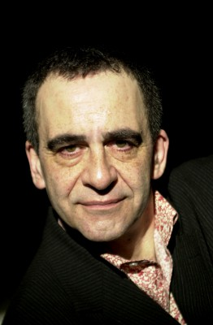

#874 Magic in the Moonlight
 
 IMDB-Wertung: 6.6 / 10
IMDB-Wertung: 6.6 / 10  Metascore: 54
Metascore: 54 
Der angesehene Illusionist Stanley wird in den 1920er Jahren an die Côte d’Azur beordert, um dort einen Schwindel aufzudecken: An der französischen Mittelmeerküste treibt die vermeintliche Wahrsagerin Sophie ihr Unwesen und zieht mit ihren übernatürlichen Prophezeiungen den Reichen und Schönen das Geld aus den prallgefüllten Taschen. Um den mysteriösen Fall zu lösen, muss sich der englische Gentleman in das ausschweifende Leben der dekadenten Oberschicht stürzen. Neben dem Luxus in Form von pompösen Villen und exzessiven Parties mit jeder Menge Jazzmusik ist es vor allem die attraktive Hellseherin, die Stanley zunehmend den Kopf verdreht. Als sich Sophie und Stanley langsam näher kommen, beginnt sogar der Meisterillusionist selbst zu bezweifeln, dass es sich bei der jungen Dame um eine Quacksalberin handeln könnte…
Jahr: 2014
Dauer: 97 Minuten
FSK: 0
Land: USA Studio: Sony Pictures ClassicsTonspuren: DD5.1 - ,
Untertitel:
Auflösung: 1080p (1920x808) Größe: 5201 MB
Genre: Komödie, Liebe
Regisseur:  Woody Allen
Woody Allen
Drehbuch: Woody Allen
Soundtrack:
Darsteller:
 Colin Firth als Stanley
Colin Firth als Stanley- Antonia Clarke als Wei Ling Soo's Assistant
 Wolfgang Pissors als Backstage Fan
Wolfgang Pissors als Backstage Fan Simon McBurney als Howard Burkan
Simon McBurney als Howard Burkan- Ute Lemper als Cabaret Singer
 Catherine McCormack als Olivia
Catherine McCormack als Olivia- Eileen Atkins als Aunt Vanessa
-  Erica Leerhsen als Caroline
 Jeremy Shamos als George
Jeremy Shamos als George- Hamish Linklater als Brice Catledge
 Emma Stone als Sophie
Emma Stone als Sophie Marcia Gay Harden als Mrs. Baker
Marcia Gay Harden als Mrs. Baker Jacki Weaver als Grace Catledge
Jacki Weaver als Grace Catledge-  Paul Bandey als Reporter
 Kenneth Edelson als Gypsy , uncredited
Kenneth Edelson als Gypsy , uncredited- Natasha Andrews als Wei Ling Soo's Assistant
- Valérie Beaulieu als Wei Ling Soo's Assistant
- Peter Wollasch als Stage Manager
- Jürgen Zwingel als Backstage Fan
- Sébastien Siroux als Backstage Fan
- Didier Muller als Butler
- Ronald Alphonse als Jazz Musician
- Ronald Baker als Jazz Musician
- Kelly Keto als Jazz Musician
- Olivier Marchevet als Jazz Musician
- Geroges Edouard Nouel als Jazz Musician
- Mark Sims als Jazz Musician
- Rudolf Krause als Reporter
- Patrick Zard als Reporter
- Pedro Chomnalez als Reporter
- Jessica Forde als Reporter
- Lionel Abelanski als Doctor
- Baby Bauer als The Elephant
Datei: X:\2014(G-M)\Magic in the Moonlight (2014, FSKo.Al., 1920x808).mkv seit 10.04.2015
Festplatte: HD 2013(I-Z)-2014(A-Z)
 Es gibt insgesamt 136 Filme in der Gruppe '2014(G-M)'
Es gibt insgesamt 136 Filme in der Gruppe '2014(G-M)'